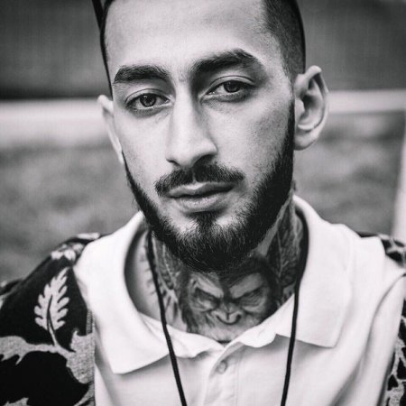
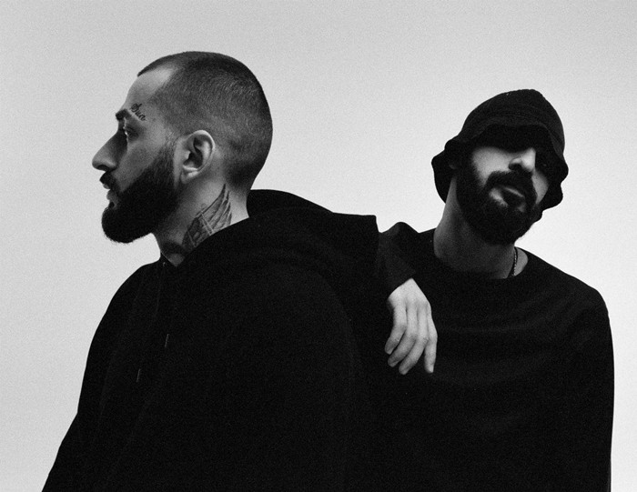

Miyagi (Азамат Кудзаев) родился 13 декабря 1990 года в городе Владикавказе, где и провел все свое детство. В семье Азамата царила творческая атмосфера, хотя прямого отношения к искусству родители не имели. Отец с матерью, осетины по национальности, – медики. Казбек Кудзаев – уважаемый на родине хирург, в Северной Осетии он руководит центром ортопедии и эстетической хирургии. Азамат с детства демонстрировал таланты: много читал, увлекся единоборствами, в раннем возрасте обнаружился музыкальный слух и красивый голос.
Читать далее

Andy Panda, также известный как Эндшпиль (Сослан Бурнацев) родился 2 октября 1995 года в городе Владикавказе — популярный российский рэпер, о творческой биографии которого смело можно сказать: музыкант добился всего собственными талантом и трудом. Исполнитель стал настоящим открытием для Северной Осетии, а затем и для всей страны. Окончив школу, музыкант отправился учиться на технолога. Однако, к счастью для поклонников, работать по этой специальности не стал, выбрав кардинально другой путь в жизни — путь на сцену.
Читать далее

Miyagi & Andy Panda (также Эндшпиль) — российский хип-хоп дуэт образованный в 2015 году. Коллектив состоит из двух человек, известных под сценическими псевдонимами: «Miyagi» — Азамат Кудзаев и «Andy Panda» (также «Эндшпиль») — Сослан Бурнацев. Мало кто знает, но одной из первых работ ребят стал трек «За идею», выпущенный 24 сентября. Следующей работой дуэта стал успешный сингл «Санавабич», который был выпущен вместе с клипом 29 октября.
Читать далее